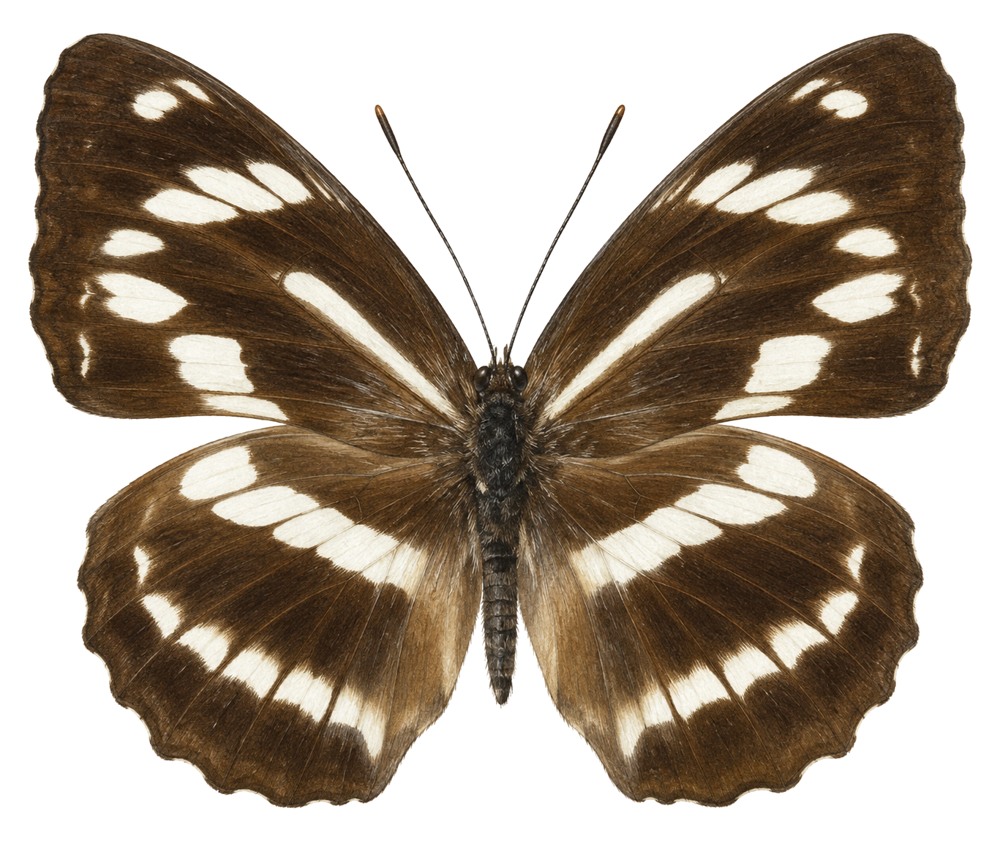

タテハチョウ類 · 084 / 165
ララサンミスジ
Athyma fortuna

特徴・見分け方
黒褐色の翅に白い帯がある。県内ではきわめて少ない記録を紹介する項目。
雌雄の違い
雌雄はよく似る。翅形や腹部の違いを併せて確認し、色だけで判別しない。
大きさ
数値未確認。今回確認した資料に基づく前翅長・開張の確かな値は得られなかった。
沖縄の島別記録
記録のある島：石垣島。記録島の抜粋で、すべての記録地を列挙したものではない。
生息環境
沖縄では記録個体の情報が中心。県内の選好環境は未確認。
生態・識別上の補足
石垣島バンナ岳で1985年10月28日に雌が記録された。地域資料のhortunaはfortunaの綴り誤りとして補正。
幼虫・食草
今回参照した県内資料では食草の詳細は未確認。
参照元・参考資料
- 日本の蝶：形態・雌雄差
資料内の参照日: 2026-11-10 - 沖縄蝶類生態図鑑：ララサンミスジ
資料内の参照日: 2026-11-10 - 環境庁：Athyma fortuna表記
資料内の参照日: 2026-11-10
掲載内容は提供データ（2026年11月10日更新）に基づきます。記録島は現在の定着や観察の容易さを保証しません。イラストは参考表現で、同定には実物の形態と参照資料を併せて確認してください。